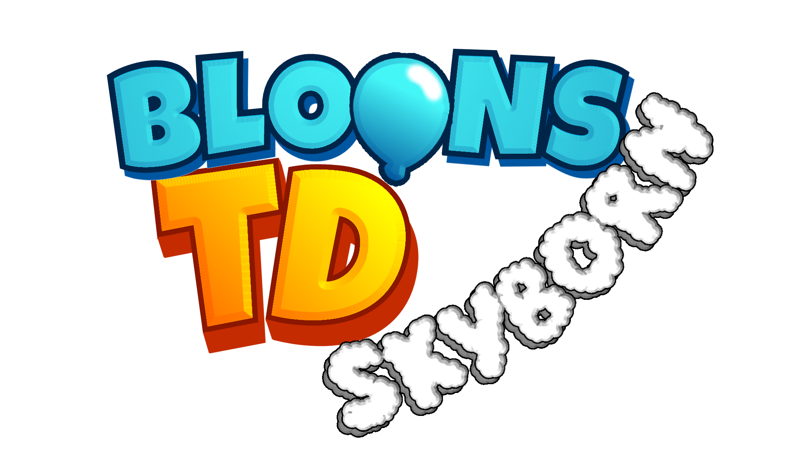

Player
Level 1
0 / 1000 XP
🐵 $0
Please rotate your device to landscape mode or use a larger screen.

Description here...
forceMinigame() / closeMinigame() still work for on-demand play, and the delay is tunable live via tuning.minigame.appearAfterMs.npm run build) now include all four editor/test pages and your sprites — a deploy no longer ships without art or working editors.removeCash path; regular cash gains are untouched).forceMinigame() in the devtools console to play it anytime (closeMinigame() to dismiss). (Removed in v1.3.4, brought back in v1.3.5 — it now only shows up during longer loads.)tuning is exposed on the console (window.tuning) — boss cutscene pacing (phase durations + reveal fps) and minigame feel knobs can be adjusted live without a rebuild. Replay the cutscene instantly with retryCutscene().levelUp(n) in the devtools console instantly gains n levels through the normal flow — category levels show the "pick a tower" screen one at a time, and newly unlocked heroes pop up with their portrait. Handy for testing later-level content without grinding.?canvas=1 fallback to drift out of sync.Scroll over a hitbox to resize it.
Mouse wheel to scale. Space+Drag to pan.
You survived to Wave 0
You beat the final wave!